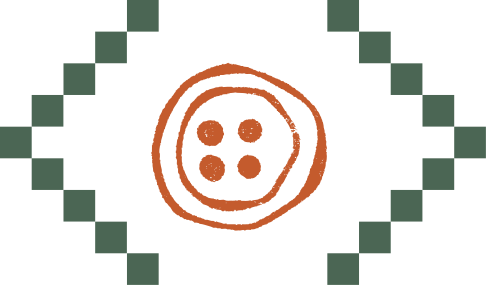
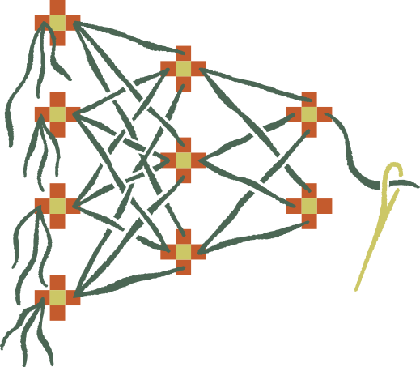
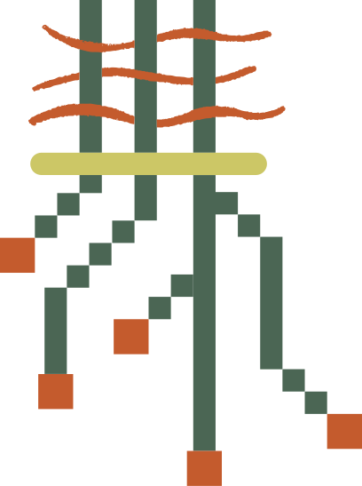

IA, trabajo
y negocios.
Una mirada desde México al cambio tecnológico en el mundo.
«Hay décadas en las que no pasa nada, y semanas en las que pasan décadas».
De puntos aislados a una red: una metáfora visual del conocimiento conectado.
Charla divulgativa · Artesanos Digitales · Fuentes consultadas: 16 de octubre de 2026. Cada dato conserva su año.
Dos oficios.
Una conversación.
Maestro del telar
Hendrik Martina
Ingeniero de plataforma e infraestructura de IA.
Maestro alfarero
Jesús Lerma
Artesanos Digitales.
Hoy venimos a entender el cambio, no a presentar un catálogo de servicios.
La tecnología también
se aprende en comunidad.
Preguntar, experimentar y compartir lo que sí podemos comprobar.
De piezas sueltas
a un sistema que tiene sentido.
Un modelo no trabaja solo.
Los datos, las herramientas y las personas tienen que conectarse.
La forma puede cambiar. Los criterios de calidad no desaparecen.
Jarrón → piezas → tejido. Metáfora del trabajo conjunto, no un diagrama técnico de un modelo.
¿Una quinta
revolución industrial?
Antes ampliamos la fuerza física.
Ahora automatizamos partes del trabajo intelectual.
Es la hipótesis de la conferencia: herramientas que participan en lo que construimos y descubrimos. No significa que desaparezcan la invención ni la responsabilidad humanas.
Marco interpretativo del ponente; no es una clasificación histórica universal ni la definición institucional de Industria 5.0.
Del músculo
al trabajo cognitivo.
- Vapor. Mecanizar trabajo físico.
- Electricidad. Producir a otra escala.
- Computación. Automatizar instrucciones.
- Conexión digital. Coordinar sistemas.
- Agentes. Ejecutar objetivos acotados.
¿Escalones o cambio continuo? La rampa es una hipótesis, no un pronóstico.
Vapor → electricidad → computación → conexión digital → agentes. El quinto escalón es el marco propuesto en esta charla.
Esquema narrativo adaptado de la conferencia UTM, no una escala numérica de progreso. Las transformaciones se superponen.
“Industria 5.0”
también tiene otro significado.
Para la Comisión Europea, el centro está en las personas, la sostenibilidad y la resiliencia.
Personas
Bienestar, habilidades y capacidad de decidir.
Sostenibilidad
Recursos y límites ambientales, no solo eficiencia.
Resiliencia
Poder operar y adaptarse cuando hay interrupciones.
Nuestra hipótesis sobre agentes no sustituye esa definición institucional.
Comisión Europea · Industry 5.0. Consulta: 16 oct 2026.
Tres preguntas.
No una promesa.
- Capacidad¿Qué tareas puede resolver la IA y con qué errores?
- Adopción¿Quién la usa y quién todavía no puede aprovecharla?
- Resultados¿Mejora el trabajo cuando contamos revisión, costo y calidad?
Primero la evidencia. Después, la interpretación.
No toda automatización
es inteligencia artificial.

Reglas
“Si vence la factura, manda un recordatorio”. Sigue una instrucción fija.

IA generativa
Redacta, resume o interpreta contenido. Puede producir una respuesta convincente y equivocada.
Agente
Combina un modelo con herramientas para actuar y revisar resultados dentro de ciertos permisos.
Un recordatorio no necesita un agente. La herramienta depende de la tarea.
De responder
a ejecutar pasos.
- Percibir: consultar datos y resultados.
- Razonar: proponer el siguiente paso.
- Actuar: usar una herramienta permitida.
- Verificar: decidir si sirve o debe detenerse.
La persona define el objetivo y autoriza las acciones sensibles.
Objetivo → observar → razonar → actuar con herramientas → verificar. Una persona conserva el control de permisos y resultados.
Ciclo agéntico de la conferencia UTM. Esquema explicativo, no garantía de corrección ni autonomía.
Una cotización,
paso por paso.
Recorrido didáctico con datos ficticios; no es una ejecución en vivo ni un caso de cliente.
- Encargo“Cotiza 12 sillas para el viernes”.
- ConsultaEl catálogo confirma 8 disponibles, no 12.
- DecisiónLa respuesta correcta es preguntar por las 4 faltantes, no prometer la entrega.
- AprobaciónLa persona confirma precio, plazo y envío del mensaje.
La capacidad crece.
La autonomía no está garantizada.
METR · duración humana de tareas al 50% de éxito · serie TH 1.1
| Modelo · lanzamiento | Horizonte estimado | Intervalo de confianza |
|---|---|---|
| GPT-4 · 2023 | 4 min | 2–8 min |
| Opus 4.5 · nov 2025 | 4.9 horas | 2.7–10.4 horas |
| Opus 4.6 · feb 2026 | 12 horas | 5.3–60.6 horas |
No son horas trabajando sin fallar. No equivale a reemplazar una jornada laboral.
METR, TH 1.1 · última actualización: 8 sep 2026; página ya no mantenida. Estimaciones centrales superiores a 16 h: no fiables con esta batería. Intervalos muy amplios.
Una buena calificación
no es un negocio funcionando.
En una evaluación
La tarea está delimitada.
El criterio de éxito está definido.
El entorno está preparado.
En el trabajo
Faltan datos y contexto.
Hay excepciones y clientes.
Alguien responde por los errores.
Capacidad técnica ≠ adopción ≠ productividad ≠ utilidad.
METR: metodología y preguntas frecuentes. Distinción retomada de la conferencia UTM.
No es solo programación.
Tampoco son oficios resueltos.
Leer, comparar, redactar, calcular y proponer aparecen en muchos trabajos.
Oficina y comercio
Documentos, inventarios, cotizaciones y reportes.
Áreas especializadas
Derecho, finanzas, medicina y conocimiento experto.
Investigación
Matemáticas, ciencia y biología computacional.
Se repite el patrón de la UTM: una tarea evaluada no equivale a toda una profesión.
Oficina y proyectos:
terminar importa más que generar.
| Campo | Salida útil | Lo que no demuestra |
|---|---|---|
| Oficina | Un reporte con datos rastreables | Que todos sus números sean correctos |
| Trabajo freelance | Un entregable que cumple requisitos | Que el cliente lo acepte sin cambios |
| Conocimiento experto | Una comparación de alternativas | Que conozca todo el contexto del negocio |
El criterio es el resultado aceptado, no la cantidad de texto o código.
En áreas sensibles,
la revisión cambia de nivel.
- Derecho
- Una cita debe existir y aplicar a la jurisdicción y fecha del caso.
- Finanzas
- Un escenario necesita supuestos explícitos y cálculos comprobables; no garantiza un rendimiento.
- Medicina
- Un resumen puede ayudar; no sustituye una evaluación clínica ni autoriza compartir expedientes.
Cuanto mayor es la consecuencia del error, más fuerte debe ser la verificación.
La ciencia ya ofrece
un ejemplo concreto.
Nobel de Química 2024 · diseño y predicción de proteínas
David Baker
Diseño computacional de proteínas: construir nuevas estructuras.
Hassabis y Jumper
Predicción de estructuras mediante IA: AlphaFold2.
Una predicción no es un tratamiento aprobado. El laboratorio y la validación siguen importando.
Real Academia Sueca de Ciencias · Nobel de Química, 9 oct 2024. Consulta: 16 oct 2026.
Energía, conexión
y nuevas herramientas.
El fuego transforma materiales.
Internet conecta información y personas.
Los agentes pueden participar en la construcción de nuevas herramientas.
La comparación abre una pregunta sobre la velocidad. No mide cuál es “más importante”.
Fuego → globo conectado → agentes. Metáfora de la conferencia, no escala de impacto histórico.
Hipótesis del ponente adaptada de la UTM: acelerar parte del trabajo cognitivo no prueba una transformación histórica superior.
El mundo empresarial
no son solo las grandes compañías.
Las pymes representan alrededor del 90% de los negocios y más de la mitad del empleo mundial.
Por eso importa quién puede acceder a financiamiento, habilidades y tecnología.
Banco Mundial · SME Finance. Estimación general, no un censo mundial de 2026. Las definiciones de pyme varían entre países.
El uso empresarial de IA
sí está creciendo.
Países de la OCDE con datos disponibles · empresas que reportan usar IA
La adopción se duplicó con creces. Eso no demuestra que se duplicaran las ganancias.
OCDE · comunicado de 28 ene 2026. No es una tasa mundial ni de todas las microempresas. Escala de barras: 0–100%.
Pero no todas
avanzan al mismo ritmo.
OCDE · adopción de IA por tamaño empresarial · 2025
Que una herramienta esté disponible no significa que todos puedan integrarla.
OCDE · 28 ene 2026. Cobertura empresarial de la fuente, no extrapolable a todo México. Escala: 0–100%.
En México, hablar de negocios
es hablar de microempresas.
INEGI · Censos Económicos 2024 · datos de 2023
95.4% de las unidades económicas son microempresas.
Ocupan al 41.4% del personal del universo estudiado. Micro: de 0 a 10 personas.
INEGI · resultados definitivos, p. 7. Sector privado y empresas paraestatales: 5,468,180 unidades. No equivale a todo el empleo del país.
Antes de la IA,
está la brecha digital.
México · unidades económicas que usaron internet para sus actividades
No usar internet en el negocio no equivale a no tener señal o teléfono.
INEGI · CE 2024, p. 16. Universo censal privado y paraestatal. Uso para actividades del negocio, no disponibilidad de conexión. Escala: 0–100%.
Vender por internet
también depende del tamaño.
México · unidades económicas que realizaron ventas por internet · 2023
Es porcentaje de negocios que venden en línea, no de sus ingresos.
INEGI · CE 2024, p. 18. Sector privado y empresas paraestatales. Escala: 0–100%.
El denominador
cambia la historia.
“¿Qué porcentaje usa IA?”
Primero: ¿porcentaje de quiénes?
- ¿De todos los negocios o solo de quienes usan herramientas digitales?
- ¿Incluye microempresas o solo empresas de cierto tamaño?
- ¿Mide uso personal, una prueba o integración en la operación?
No pongamos el censo mexicano de 2023 y la OCDE de 2025 en una carrera sin revisar cobertura y método.
Hay mejoras medidas.
No son universales.
Asistencia con IA en atención al cliente · NBER, versión de 2023
| Grupo | Cambio en asuntos resueltos por hora |
|---|---|
| Promedio del estudio | +14% |
| Personal novato y de menor habilidad | +34% |
| Personal más experimentado y hábil | Impacto mínimo |
Un resultado en soporte no es una promesa de ahorro para cualquier empresa.
Brynjolfsson, Li y Raymond · NBER WP 31161, revisión nov 2023. Cifras de esa versión, no de la publicación final de 2025. No mide utilidades.
Sentirse más rápido
no basta para demostrarlo.
La advertencia de 2025
En un experimento de METR, 16 desarrolladores tardaron 19% más con IA en 246 tareas de sus propios proyectos.
La actualización de 2026
METR advierte que ese resultado histórico ya no representa las herramientas actuales. El nuevo estudio tiene sesgos de selección y no permite estimar bien el efecto.
La lección no es “la IA no sirve”. Es medir, actualizar la evidencia y reconocer lo que no sabemos.
METR · 10 jul 2025 y actualización de 24 feb 2026. Contexto específico de desarrollo de software; no promedio empresarial.
Una tarea puede cambiar
sin que desaparezca el oficio.

Una cotización no es todo el trabajo de quien lleva un taller.
También escucha, inspecciona, negocia, coordina y responde cuando algo sale mal.
Automatizar tareas no permite deducir cuántos empleos desaparecerán. También puede cambiar la distribución del trabajo.
¿Dónde se puede notar?
En tareas concretas.
| Negocio | Posible apoyo | Qué debe verificarse |
|---|---|---|
| Tienda | Extraer pedidos de mensajes | Producto, cantidad, precio y existencias |
| Taller | Preparar una cotización | Materiales, mano de obra y plazo |
| Despacho | Clasificar documentos y resumirlos | Datos, omisiones y confidencialidad |
El ejemplo explica una posibilidad. Solo una prueba puede decir si resulta útil.
El costo no termina
en la suscripción.
- Preparación: ordenar datos, permisos y procesos.
- Operación: herramienta, integración y capacitación.
- Revisión: comprobar resultados y corregir errores.
- Dependencia: cambios de proveedor, precios y disponibilidad.
Importa el costo por tarea correctamente terminada, no solo lo rápido que aparece una respuesta.
La cuenta completa
de una tarea.
- PrepararDar contexto, conseguir datos autorizados y definir qué cuenta como correcto.
- EjecutarIncluir intentos fallidos, herramientas y tiempo de espera.
- RevisarContar correcciones y errores que aparecen después.
- AceptarDividir el costo total entre las tareas aceptadas, no entre todos los intentos.
Criterio de evaluación propuesto en la conferencia UTM. Si ninguna tarea se acepta, no inventar un costo unitario.
Contraargumentos.
Los que pueden cambiar la conclusión.
- Las tareas reales son más desordenadas que las evaluaciones.
- Adoptar una herramienta no demuestra un beneficio económico.
- Datos, capacitación e integración pueden convertirse en el cuello de botella.
- Infraestructura, dependencia y poder de mercado también importan.
No son un pie de página: pueden volver inviable una aplicación.
La nube
también ocupa un lugar.
Electricidad y chips
El servicio depende de infraestructura física y capacidad disponible.
Enfriamiento
El impacto del agua y la energía depende del diseño, el clima y la ubicación.
Dependencia
Acceso, costos y condiciones pueden cambiar por decisiones de proveedores y gobiernos.
No hay una cifra universal de consumo por pregunta que describa todos los sistemas.
Contexto: IEA · Energy and AI (2025). Sin extrapolar consumo total de centros de datos a cada consulta.
Los límites también
son parte de la explicación.
- Información falsa
- Revisar cifras, citas y condiciones contra documentos originales.
- Datos personales
- No subir expedientes, identificaciones o datos de clientes sin autorización y protección adecuadas.
- Acciones con consecuencias
- Exigir aprobación para pagos, envíos, descuentos o borrado de registros.
- Pérdida de criterio
- Poder explicar por qué se acepta una respuesta; no confiar solo en cómo suena.
Cómo aprender
sin comprar la promesa.
- Elegir una tareaPequeña, repetible y con un resultado que se pueda revisar.
- CompararCasos equivalentes con y sin IA; contar tiempo total, errores y correcciones.
- Decidir con evidenciaContinuar, cambiar el método o dejar de usarla si no ayuda.
Una prueba pequeña orienta; no demuestra por sí sola un retorno para toda la empresa.
Aprender con IA
no es pedir la respuesta y copiarla.
- AntesIntentar resolver el problema y explicar qué falta entender.
- DurantePedir pistas, ejemplos y un argumento en contra de la primera respuesta.
- DespuésResolver un caso nuevo sin asistencia y explicar el procedimiento.
Optimizar el trabajo y mejorar la forma de aprender son responsabilidades distintas.
Que nos ayude a pensar.
No a dejar de pensar.
Pedir explicaciones, buscar contraejemplos, contrastar fuentes y practicar sin asistencia.
La responsabilidad es compartida: quienes dirigen deben dar condiciones para aprender; quienes usan la herramienta deben verificar y conservar su criterio.
Ni fe ciega ni rechazo automático. Curiosidad con evidencia.
Fuentes para seguir
la conversación.
- METR · capacidades y límites de los agentesTH 1.1; corte de septiembre de 2026.
- INEGI · Censos Económicos 2024Resultados definitivos; actividad económica de 2023.
- OCDE · adopción de IA en empresasDatos 2023–2025; comunicado de enero de 2026.
- Banco Mundial · pequeñas y medianas empresasContexto mundial; definiciones variables entre países.
- NBER · Generative AI at WorkWP 31161, revisión de noviembre de 2023.
Referencias, denominadores y límites completos en fuentes.md. La charla adapta la conferencia UTM, no sus cifras sin verificación.
¿Qué cambia
en su oficio?
¿Qué tarea probarían?
¿Qué error no aceptarían?
¿Qué evidencia les haría cambiar de opinión?
Preguntas y conversación, a mano alzada.
Gracias.
Hendrik Martina · Jesús Lerma
Entender el cambio.
Conservar el criterio.
Compartir conocimiento y verificar juntos. Artesanos Digitales.